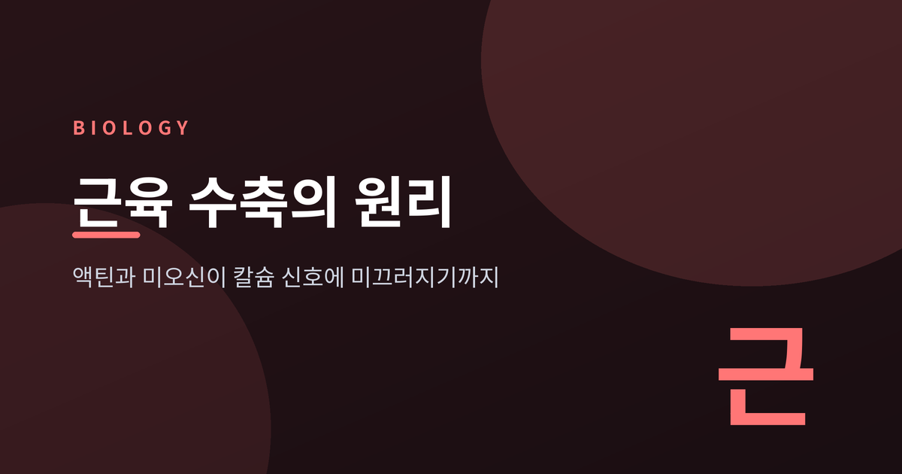
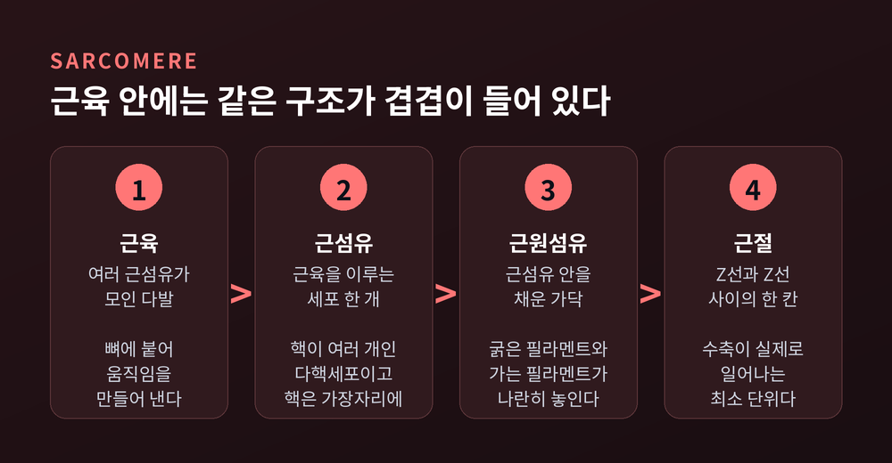
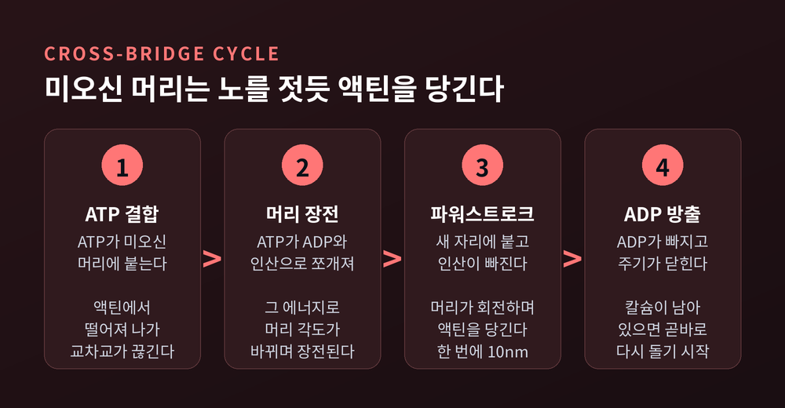
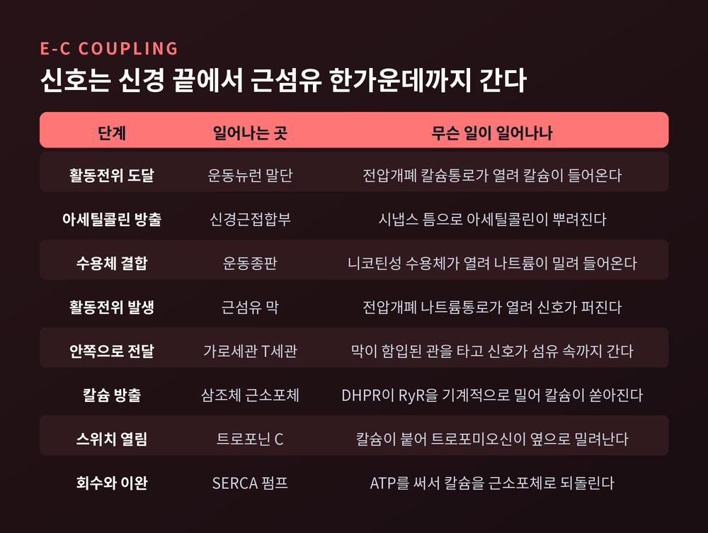
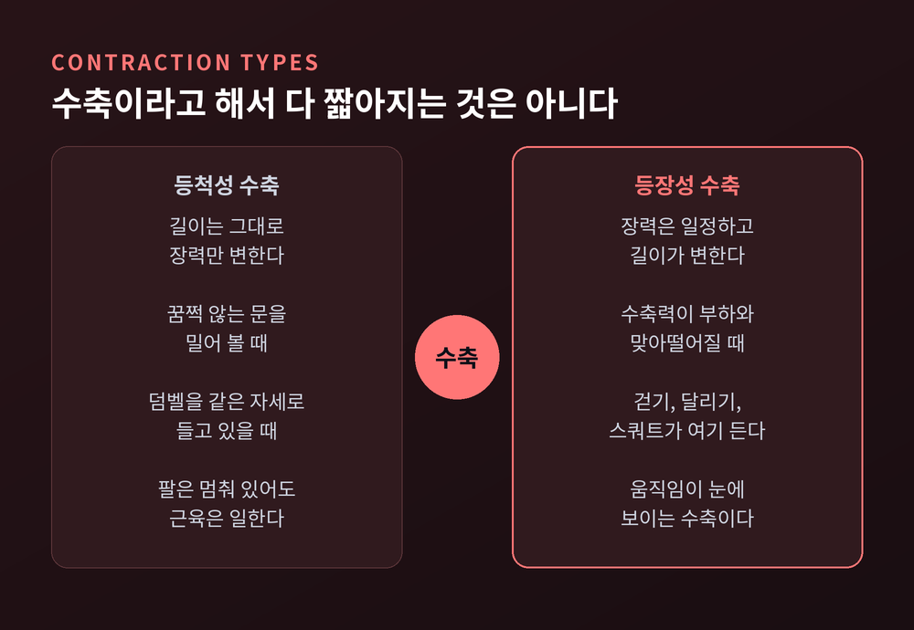
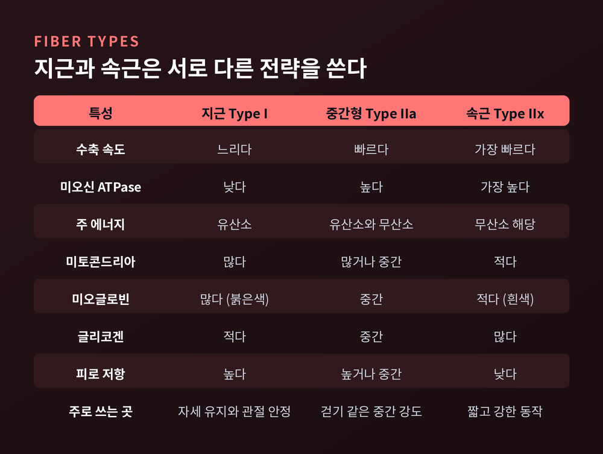
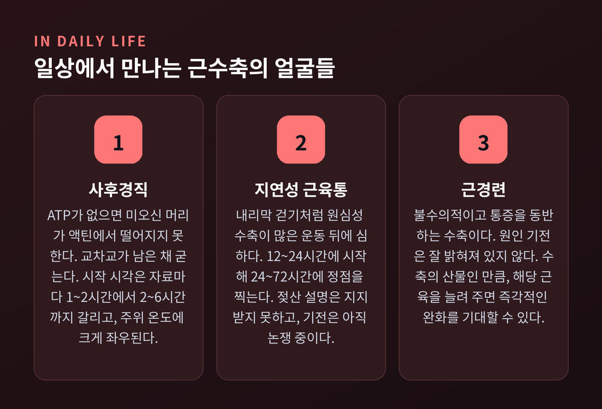

이번 글에서는 근육 수축의 원리를 정리해 보겠습니다.
팔을 굽히면 근육이 부풀어 오른다는 사실은 누구나 압니다.
그 안에서 실제로 무엇이 미끄러지고 무엇이 스위치를 여는지, 구조와 수치를 따라가며 살펴보려 합니다.
골격근은 하나의 덩어리처럼 보이지만 안은 여러 겹입니다.
근육은 근섬유라는 세포들의 다발입니다. 근섬유는 핵이 여러 개인 다핵세포이고, 그 핵들은 세포 가장자리에 붙어 있습니다.
근섬유 하나는 다시 근원섬유로 나뉩니다.
근원섬유 안에는 굵은 필라멘트와 가는 필라멘트가 세로로 반복 배열되어 있고, 이 반복 단위가 근절(sarcomere)입니다.
근절이 수축의 최소 단위입니다.
세포 하나 안에 근절이 수천 개 들어 있을 수 있습니다.
근육이 현미경에서 줄무늬로 보이는 것도 이 근절이 줄지어 늘어선 탓입니다.
근절 안쪽에는 이름 붙은 구획이 있습니다.
Z선은 근절과 근절의 경계이고, 가는 필라멘트가 여기에 매여 있습니다.
A대는 근절 한가운데로 굵은 필라멘트가 놓인 자리입니다.
A대 안에서 가는 필라멘트가 닿지 않는 부분이 H구역이고, 그 한가운데를 M선이 가릅니다.
A대 양쪽의 I대에는 가는 필라멘트와 Z선이 있습니다.
굵은 필라멘트의 주인공은 미오신입니다. 무거운 사슬 한 쌍과 가벼운 사슬 두 쌍으로 이루어져 있습니다.
무거운 사슬 둘이 꼬여 꼬리를 만들고, 반대쪽 끝에서는 머리 두 개가 나옵니다.
머리에는 액틴이 붙는 자리와 ATP가 붙는 자리가 따로 있습니다.
가는 필라멘트는 세 단백질의 조합입니다.
구형 액틴이 중합되어 두 가닥으로 꼬인 것이 액틴이고, 그 위를 트로포미오신이 감싸며 미오신 결합부위를 덮습니다.
그리고 트로포미오신 옆에 트로포닌 세 단백질이 붙어 있습니다.
여기에 굵은 필라멘트 하나당 미오신 분자가 대략 300개씩 들어 있으니, 근육 하나가 쓰는 에너지의 규모가 짐작되실 겁니다.

예전에는 필라멘트 자체가 접히거나 오그라들며 근육이 짧아진다고 보았습니다.
지금의 설명은 다릅니다. 아무것도 짧아지지 않고, 다만 서로 미끄러진다는 것입니다.
1954년 5월 22일, 학술지 네이처에 "Structural Changes in Muscle During Contraction"이라는 공통 제목 아래 두 논문이 나란히 실렸습니다.
하나는 A. F. 헉슬리와 니더게르케의 간섭현미경 연구였고, 다른 하나는 H. E. 헉슬리와 한슨의 횡문 변화 연구였습니다.
두 팀이 각자 관찰한 결과는 같은 곳을 가리켰습니다.
근육이 짧아지는 동안 A대의 폭은 거의 변하지 않았습니다.
줄어드는 것은 I대뿐이었습니다.
굵은 필라멘트가 놓인 구간의 길이가 그대로라면, 굵은 필라멘트가 짧아진 것은 아닙니다.
그렇다면 가는 필라멘트가 그 사이로 끌려 들어갔다고 볼 수밖에 없습니다.
이것이 활주필라멘트설입니다.
이해를 돕는 비유가 하나 있습니다.
두 책장 사이에 서서 양쪽 밧줄을 번갈아 당겨 책장을 자기 쪽으로 끌어오는 사람을 떠올려 보십시오.
책장이 Z선, 밧줄이 액틴, 사람이 미오신입니다. 사람은 가운데에 그대로 서 있습니다.
70년이 지났지만 이 골격은 거의 손대지 않은 채로 남아 있습니다.
미오신 머리 하나가 액틴을 당기는 거리는 그리 길지 않습니다.
한 번에 약 10나노미터입니다. 그래서 붙였다 떼었다를 쉼 없이 반복해야 합니다.
이 반복이 교차교 주기(cross-bridge cycle)입니다.
주기를 따라가면 이렇습니다.
먼저 ATP가 미오신 머리에 붙습니다. 그러면 미오신은 액틴에서 떨어집니다.
이어 ATP가 ADP와 인산으로 쪼개집니다. 이때 나온 에너지로 머리의 각도가 바뀌며 장전됩니다.
장전된 머리가 액틴의 새 자리에 붙고, 인산이 먼저 빠져나가면서 결합이 단단해집니다.
그다음 머리가 M선 쪽으로 회전합니다. 이 회전이 파워스트로크이고, 실제로 액틴이 끌려오는 순간입니다.
마지막으로 ADP가 방출됩니다.
노 젓기와 닮았습니다. 당기고, 물에서 들어 올리고, 앞으로 옮기고, 다시 담급니다.
여기서 눈여겨볼 대목이 하나 있습니다. ATP가 없으면 미오신 머리는 액틴에서 떨어지지 않습니다.
ATP는 힘을 내기 위해서만 필요한 것이 아니라, 손을 놓기 위해서도 필요합니다.
뒤에서 사후경직을 이야기할 때 이 문장이 다시 나올 것입니다.
에너지 공급 쪽도 짚어 두겠습니다.
근육에 저장된 ATP는 몇 초분에 지나지 않습니다.
크레아틴인산이 인산을 넘겨주며 대략 15초를 버팁니다.
그다음은 무산소 해당과정입니다. 포도당 한 분자에서 ATP 두 개를 얻지만 1분 남짓밖에 지탱하지 못합니다.
유산소 호흡은 포도당 한 분자에서 약 36개를 얻습니다. 쉬거나 가볍게 움직일 때 쓰는 ATP의 약 95퍼센트를 이쪽이 담당합니다.
전력질주가 오래 가지 않는 이유, 운동이 끝나고도 한참 숨이 차는 이유가 여기에 있는 셈입니다.

미오신은 늘 준비되어 있습니다.
문제는 붙을 자리가 막혀 있다는 것입니다.
쉬는 근육에서는 트로포미오신이 액틴 위의 미오신 결합부위를 덮고 있습니다.
수축의 첫 단계는 미오신이 아니라 칼슘이 트로포닌에 붙는 것입니다.
정확히는 트로포닌 세 단백질 중 트로포닌 C입니다.
칼슘이 붙으면 트로포닌의 형태가 바뀌고, 그 힘에 트로포미오신이 옆으로 밀려납니다.
덮개가 치워지면 미오신이 비로소 액틴에 닿습니다.
트로포닌 C의 칼슘 결합에는 협동성이 있습니다.
칼슘 하나가 붙으면 다음 칼슘에 대한 친화도가 올라갑니다. 트로포닌 C 하나에 최대 네 개까지 붙습니다.
덕분에 반응이 완만하지 않고 스위치처럼 딱 떨어집니다.
나머지 두 단백질도 각자 몫이 있습니다.
트로포닌 T는 트로포닌을 트로포미오신에 붙들어 매고, 트로포닌 I는 결합부위를 막는 쪽을 맡습니다.
1994년에는 칼슘이 있을 때와 없을 때의 구조를 3차원으로 재구성해, 트로포미오신이 실제로 회전한다는 것을 보인 연구도 나왔습니다.
칼슘은 어디서 올까요.
바깥이 아니라 세포 안, 근소포체라는 저장고에서 나옵니다.
경로는 이렇습니다.
운동뉴런을 타고 온 활동전위가 축삭 끝에 닿으면 전압개폐 칼슘통로가 열립니다.
칼슘이 들어오면 아세틸콜린이 방출됩니다.
아세틸콜린은 근섬유 쪽 운동종판의 니코틴성 수용체에 붙고, 양이온통로가 열리며 나트륨이 밀려 들어옵니다.
국소 탈분극이 일어나고, 전압개폐 나트륨통로가 열리면서 근섬유 자체에 활동전위가 생깁니다.
여기서 문제가 하나 남습니다.
근섬유는 굵습니다. 표면의 전기 신호가 어떻게 한가운데까지 닿을까요.
답은 가로세관(T세관)입니다.
근섬유의 막이 안쪽으로 깊게 함입되어 만든 관입니다. 신호가 이 관을 타고 내부로 곧장 파고듭니다.
T세관 막에는 디하이드로피리딘 수용체(DHPR)가 있고, 바로 옆에 근소포체의 종말수조가 맞붙어 있습니다.
T세관이 탈분극하면 DHPR의 형태가 바뀌고, 이 변화가 근소포체의 리아노딘 수용체(RyR)를 기계적으로 밀어 엽니다.
그 순간 칼슘이 세포질로 쏟아집니다.
골격근의 이 방식은 심장근과 다릅니다.
심장근은 바깥에서 들어온 칼슘이 방아쇠가 되어 더 큰 칼슘 방출을 부릅니다.
골격근은 그런 방아쇠 없이, 전압 변화가 단백질을 직접 밀어서 문을 엽니다.
이완도 저절로 되는 것이 아닙니다.
근소포체 막의 SERCA 펌프가 ATP를 써 가며 칼슘을 도로 퍼 담습니다.
근소포체 안에는 칼세퀘스트린이라는 결합단백질이 있어 자유 칼슘 농도를 낮춰 줍니다. 펌프가 할 일을 덜어 주는 장치입니다.
칼슘이 빠지면 트로포미오신이 다시 결합부위를 덮고, 장력이 사라집니다.
순서는 언제나 같습니다. 활동전위, 그다음 칼슘 상승, 그다음 수축입니다.
활동전위 하나가 만드는 한 번의 수축을 연축이라 합니다.
그런데 활동전위의 지속시간이 연축의 지속시간보다 짧습니다.
이완이 끝나기 전에 다음 자극이 오면 칼슘이 미처 회수되지 못한 채 힘이 겹칩니다. 이렇게 이어진 상태가 강축입니다.
우리가 평소에 내는 힘은 대부분 낱개의 연축이 아니라 겹쳐 쌓인 힘입니다.

생리학에서 "짧아진다"와 "수축한다"는 같은 말이 아닙니다.
길이가 그대로여도 장력은 만들어집니다.
등척성 수축은 길이 변화 없이 장력만 변합니다.
꿈쩍하지 않는 문을 미는 순간, 너무 무거운 것을 들어 보려 버티는 순간이 그렇습니다.
덤벨을 같은 자세로 들고 있을 때, 잠든 아이를 팔에 안고 있을 때도 마찬가지입니다.
팔은 멈춰 있지만 근육은 쉬지 않고 일합니다.
등장성 수축은 길이가 변하는 동안 장력이 일정한 경우입니다. 걷기, 달리기, 스쿼트가 여기 들어갑니다.
방향으로 나누면 둘로 갈립니다.
수축력이 부하보다 크면 근육이 짧아집니다. 구심성 수축입니다. 이두근 컬이나 스쿼트에서 일어서는 동작이 그렇습니다.
수축력이 저항보다 작으면 근육은 장력을 유지한 채 늘어납니다. 원심성 수축입니다.
내리막을 걸을 때, 무거운 것을 천천히 내려놓을 때가 그렇습니다.
원심성 수축은 브레이크입니다.
관절이 움직임 끝에서 급격히 꺾이지 않도록 감속시키는 역할을 합니다.
힘을 내는 수축만 중요한 것이 아니라, 힘을 견디며 늘어나는 수축이 관절을 지킵니다.
힘과 속도의 관계도 단순합니다.
버텨야 할 부하가 클수록 단축 속도는 느려집니다. 부하가 0일 때 속도가 최대가 됩니다.

근육은 아무 길이에서나 같은 힘을 내지 않습니다.
활주필라멘트설에서 자연스럽게 따라 나오는 결론입니다.
힘은 결국 만들어진 교차교의 수에 비례하고, 교차교의 수는 두 필라멘트가 얼마나 겹쳐 있느냐로 정해지기 때문입니다.
너무 늘어나면 겹치는 구간이 줄어 교차교가 적어집니다.
너무 짧아지면 필라멘트끼리 붐비면서 오히려 장력이 떨어집니다.
그 사이 어딘가에 가장 좋은 길이가 있습니다.
1966년 고든, 헉슬리, 줄리언의 실험이 이것을 정면으로 보였습니다.
장력이 겹침 정도에 비례했고, 힘-길이 곡선의 평탄한 구간이 근절의 H구역 길이와 맞아떨어졌습니다.
액틴이 닿지 않아 교차교가 생길 수 없는 구간이 곡선 위에 그대로 드러난 셈입니다.
앞서 H. E. 헉슬리는 1963년에 개구리 근육에서 굵은 필라멘트 1.6마이크로미터, 가는 필라멘트 2.05마이크로미터를 측정해 두었습니다.
다만 최적 길이의 숫자에는 합의가 없습니다.
흔히 인용되는 2.0~2.2마이크로미터는 개구리 근육의 값입니다.
사람 골격근의 최적 길이는 대략 2.6~2.8마이크로미터로 제시되고, 심장근은 2.2마이크로미터 안팎으로 봅니다.
'안정 길이', '이완 길이', '최적 길이' 같은 용어조차 문헌마다 다르게 쓰인다는 지적이 있습니다.
숫자 하나를 외우기보다, 겹침이 힘을 정한다는 골격을 붙드시는 편이 낫습니다.
장력에는 두 종류가 섞여 있습니다.
교차교에서 나오는 것이 능동 장력이고, 자극 없이 늘리기만 해도 생기는 저항이 수동 장력입니다.
수동 장력의 주범은 근절을 가로지르는 거대 탄성단백질 티틴입니다.
근절이 지나치게 늘어나지 않게 붙잡고, 늘어난 뒤 되돌리는 스프링 역할을 합니다.
골격근은 최적 길이에서 수동 장력의 몫이 거의 없지만, 심장근은 총 장력의 50~80퍼센트를 수동 장력이 차지합니다.
심장이 더 찬 만큼 더 세게 뛰는 프랭크-스탈링 법칙이 여기서 나옵니다.
같은 골격근이라도 섬유마다 성격이 다릅니다.
나누는 기준은 두 가지입니다. 얼마나 빨리 수축하는가, 그리고 ATP를 어떻게 만드는가.
속도를 가르는 것은 미오신 ATPase입니다.
속근 섬유는 지근 섬유보다 ATP를 대략 두 배 빠르게 가수분해합니다. 그만큼 교차교 주기가 빨리 돕니다.
지근(Type I)은 미토콘드리아가 많고 모세혈관이 촘촘하며 미오글로빈이 풍부합니다. 그래서 색이 붉습니다.
오래 버티지만 지름이 작아 큰 힘은 내지 못합니다. 자세 유지와 관절 안정화가 주 임무입니다.
속근(Type IIx)은 글리코겐을 많이 쟁여 두고 지름이 큽니다. 미오글로빈과 혈관이 적어 색이 희고, 강한 힘을 내지만 금방 지칩니다.
그 사이에 중간형(Type IIa)이 있습니다. 빠르면서도 산화 능력을 갖춰 걷기처럼 중간 강도의 움직임을 맡습니다.
칠면조를 떠올리면 쉽습니다.
다리와 넓적다리는 검은 살입니다. 종일 걸어 다녀야 하니 지근과 미오글로빈이 많습니다.
가슴살은 흰 살입니다. 나무에 오를 만큼만 짧게 날면 되니 속근 위주입니다.
사람의 근육은 대부분 세 유형을 모두 갖고 있고, 비율만 다릅니다.
분류에도 이견이 있습니다.
세 가지로 나누는 자료가 있고, IIb를 더해 네 가지로 나누는 자료도 있습니다.
근거는 미오신 중쇄 아이소폼의 발현인데, 사람에게는 IIb가 발현되지 않는다는 서술도 함께 나옵니다.
훈련과 관련해 한 가지만 덧붙이겠습니다.
근섬유의 개수는 유전적으로 정해져 있고 바뀌지 않습니다.
바뀌는 것은 각 섬유 안의 근원섬유와 근절의 양입니다. 늘면 비대, 줄면 위축입니다.
깁스를 풀었을 때 팔이 가늘어져 있는 것은 섬유가 사라져서가 아니라 그 안이 비어서입니다.

앞에서 미뤄 둔 문장을 여기서 씁니다.
ATP가 없으면 미오신 머리는 액틴에서 떨어지지 않습니다.
살아 있는 근육에서도 미오신이 액틴에 단단히 붙고 ATP가 없는 순간이 있습니다. 다만 아주 짧게 지나갑니다.
죽으면 ATP를 새로 만들 수 없습니다. 그 순간이 지나가지 않고 그대로 머뭅니다.
교차교가 끊기지 않은 채 남으니 근육이 뻣뻣해집니다. 이것이 사후경직입니다.
여기에 하나가 더 겹칩니다.
세포막의 완결성이 무너지면서 칼슘이 근섬유 안으로 밀려 들어옵니다. 결합을 오히려 부추기는 쪽입니다.
칼슘을 되돌리려면 SERCA 펌프가 ATP를 써야 하는데, 그 ATP가 없습니다.
시간표는 자료마다 갈립니다.
사후 1~2시간에 시작해 12시간에 완성되고, 12시간 유지된 뒤 다시 12시간에 걸쳐 풀린다는 서술이 있습니다.
2~6시간에 시작한다고 적은 자료도 흔합니다.
갈리는 이유는 분명합니다. 주위 온도에 크게 좌우되기 때문입니다. 더울수록 빨라지고 강해집니다.
순서에는 대체로 합의가 있습니다. 눈꺼풀과 턱처럼 작은 근육이 먼저 굳고, 큰 근육이 나중입니다.
부패가 시작되면 수축한 근육이 분해되며 경직이 풀립니다. 대략 36시간 무렵입니다.
내리막을 오래 걸은 다음날 종아리가 유독 아픕니다.
왜 하필 내리막일까요. 원심성 수축이 많기 때문입니다.
근육이 장력을 유지한 채 늘어나는 동작은, 짧아지는 동작보다 세포에 훨씬 큰 부담을 남깁니다.
지연성 근육통(DOMS)은 대개 운동 후 12~24시간에 시작해 24~72시간에 정점을 찍습니다.
그리고 일주일 안팎에 가라앉습니다. 근원섬유의 복구는 사흘째쯤 시작해 이레째 끝난다는 보고가 있습니다.
조직을 들여다보면 결합조직 손상, 근원섬유의 붕괴, 사이질액 축적이 관찰됩니다.
특히 Z선이 흐트러지는 모습이 자주 보고됩니다.
오래 믿어 온 젖산 설명은 지지받지 못하고 있습니다.
운동 직후 젖산 농도와 며칠 뒤 느끼는 통증 사이에 뚜렷한 상관관계가 나오지 않습니다.
그렇다고 다른 답이 확정된 것도 아닙니다.
젖산설, 근경련설, 결합조직 손상설, 근손상설, 염증설, 효소유출설까지 최소 여섯 가지 가설이 아직 경합합니다.
최근에는 근육이 아니라 근방추 안에서 눌린 신경말단의 미세손상이 원인이라는 대안도 제시되었습니다.
쥐가 나는 근경련도 사정이 비슷합니다.
불수의적이고 통증을 동반하는 수축이라는 것까지는 분명하지만, 원인 기전은 아직 잘 밝혀져 있지 않습니다.
통증이 한 지점에 몰린다고 해서 원인까지 그 자리에 있다는 뜻은 아니라는 지적도 있습니다.
다만 경련이 수축의 산물인 이상, 해당 근육을 늘려 주면 즉각적인 완화를 기대할 수 있습니다.
여기서 한 가지는 분명히 하겠습니다.
이 글은 원리를 설명하는 글이지 의학적 조언이 아닙니다.
통증이 오래 가거나, 근력이 눈에 띄게 떨어지거나, 소변 색이 짙어지는 등 평소와 다른 신호가 있다면 스스로 판단하지 마시고 전문의와 상담하시길 권합니다.

정리하면 이렇습니다.
근육은 짧아지는 것이 아니라 미끄러집니다.
미오신은 늘 준비되어 있고, 액틴 쪽 덮개가 열리느냐 마느냐가 모든 것을 결정합니다.
그 덮개를 여는 것이 칼슘이고, 칼슘을 내보내고 다시 거두는 일에도, 미오신이 손을 놓는 일에도 ATP가 듭니다.
물론 모든 것이 정리된 것은 아닙니다.
최적 근절 길이의 값도, 사후경직의 시작 시각도, 근육통과 근경련의 기전도 자료마다 갈립니다.
근피로의 원인조차 교과서가 "완전히 밝혀지지 않았다"고 적어 둡니다.
그래도 골격은 흔들리지 않습니다 — 겹치고, 붙잡고, 당깁니다.
지금 이 문장을 읽는 동안에도 여러분의 손끝과 눈꺼풀에서는 같은 일이 반복되고 있습니다.
10나노미터씩, 쉬지 않고 말입니다.
근육이 그저 힘을 쓰는 기관이냐고 물으신다면, 저는 아니라고 답하겠습니다.